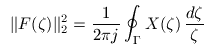
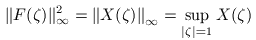

| DirectSD Toolbox |
|
|  | (1) |
|  | (2) |
|
|
(3) |
For sampled-data systems it is known
[2] that H2 and L2
problems can also be reduced, in the frequency domain,
to a functional of the form (1), where
X(ζ)
is a Hermitian self-conjugate function free of poles at
the unit circle. Therefore, a stable function
F(ζ)
can be found such that (3) holds. This function can be considered
as transfer function of an equivalent discrete-time system, and
H -norm
of this function defined by (2) can be taken as a measure of
robustness for the sampled-data system under consideration.
This value is called the associated
H
-norm
of this function defined by (2) can be taken as a measure of
robustness for the sampled-data system under consideration.
This value is called the associated
H -norm
of the sampled-data system
[1], [2]:
-norm
of the sampled-data system
[1], [2]:
sys and discrete-time controller
K:
F = tf(1, [1 1 0]);
sys = [F F;-F -F];
T = 0.1;
K = zpk ( 0.45, -0.89, 380, T );
v = sdahinorm(sys, K)
v =
0.0092
[1] Polyakov K., Rosenwasser E., and Lampe B.,
Associated
H problem for sampled-data systems // Proc. 3rd IFAC
Symposium on Robust Control Design, Prague, June 21-23, 2000.
problem for sampled-data systems // Proc. 3rd IFAC
Symposium on Robust Control Design, Prague, June 21-23, 2000.
[2] Rosenwasser, E.N., and B.P. Lampe, Computer Controlled Systems: Analysis and Design with Process-orientated Models. London: Springer-Verlag, 2000.
[3] Chen, T., and B.A. Francis, Optimal Sampled-Data Control Systems. Berlin Heidelberg New York: Springer-Verlag, 1995.
|
|
Hinf norm |
Copyright © 1999-2006 K. Polyakov.